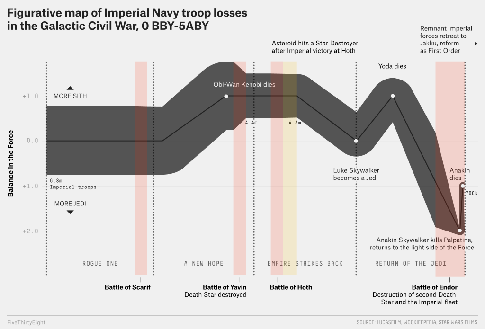

Star Wars, In One Chart
- By Walt Hickey and Ella Koeze
- Filed under Movies
- Published Dec 16, 2016
The Galactic Civil War — recently retold in the military history called Star Wars1 — pitted the Imperial Navy, one of the most sophisticated fighting forces in history, against the ragtag Rebel Alliance. The rebels resoundingly defeated the advances of the better-supplied fleet in a stunning six-year guerrilla war. How did this happen? A FiveThirtyEight analysis of the expeditionary force that saw the bulk of the fighting in the main theater of the rebellion — that is, from Scarif to Yavin to Hoth and finally Endor — found that the consolidation of Imperial forces in immense capital ships and battlestations led to catastrophic losses. With apologies to Charles Joseph Minard and his visualization of Napoleon’s invasion of Russia, here is why you never invade Hoth in winter:
{kind=link}
The Empire’s fatal strategy was particularly obvious at Yavin, when the first Death Star was destroyed — causing the deaths of approximately 2.4 million personnel, or the equivalent of 50 Star Destroyer crews — and at Endor, where the destruction of the second Death Star, a large portion of the Star Destroyer fleet and the Super Star Destroyer Executor led to the demise2 of an estimated 78 Star Destroyers worth of Imperial personnel (3.6 million personnel). Troops and materiel weren’t the only deciding factor in the conflict. There was also the Force, and the events of Endor shifted the balance of that power toward the Jedi for the first time in the war’s history. Our chart focuses solely on the military forces shown in the documentaries “Rogue One,” “Star Wars: A New Hope,” “The Empire Strike Back” and “The Return of the Jedi.” General estimates for the number of capital ships come courtesy of Lucasfilm historians, with gaps in the official record filled3 through estimation after research on Wookieepedia and through careful examination of the films themselves. Imperial forces not seen on-screen are not counted as part of the expeditionary counter-Rebellion force.
Back to home